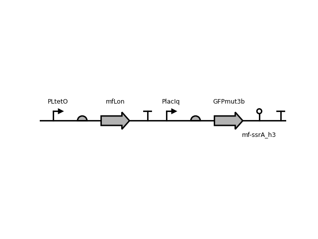
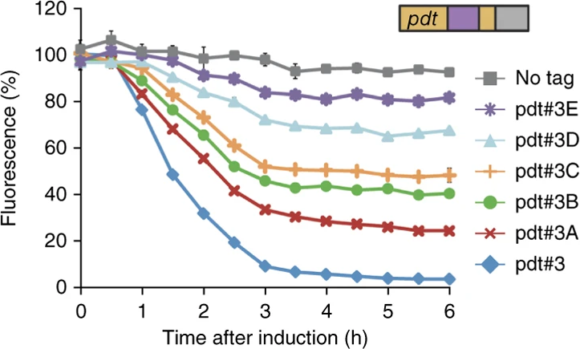

M.florum C-terminal degradation tag
mf-ssrA_h3
Data
| Parameter | Value | Unit |
|---|---|---|
| Strength | strong | - |
| Strain | MG1655Pro |
|---|---|
| Plasmid | pZE21-MCS |
| ori | ColE1 |
| Resistance | Kan |
Circuit Context
(better resolution)
Description
Sequences
Protease
atggtgaatgtgaaaccagtaacgctgtacgatgtcgcagagtatgccggtgtctcttatcagaccgtttcccgcgtggtgaaccaggccagccacgtttctgcgaaaacgcgggaaaaagtggaagcggcgatggcggagctgaattacattcccaaccgcgtggcacaacaactggcgggcaaacagtcgttgctgattggcgttgccacctccagtctggccctgcacgcgccgtcgcaaattgtcgcggcgattaaatctcgcgccgatcaactgggtgccagcgtggtggtgtcgatggtagaacgaagcggcgtcgaagcctgtaaagcagcggttcacaatcttctcgcgcagcgcgtcagtgggctgatcattaactatccgctggatgaccaggatgccattgctgtggaagctgcctgcactaatgttccggcgttatttcttgatgtctctgaccagacacccatcaacagtattattttctcccatgaagacggtacgcgactgggcgtggagcatctggtcgcattgggtcaccagcaaatcgcgctgttagcgggcccattaagttctgtctcggcgcgtctgcgtctggctggctggcataaatatctcactcgcaatcaaattcagccgatagcggaacgggaaggcgactggagtgccatgtccggttttcaacaaaccatgcaaatgctgaatgagggcatcgttcccactgcgatgctggttgccaacgatcagatggcgctgggcgcaatgcgcgccattaccgagtccgggctgcgcgttggtgcggacatctcggtagtgggatacgacgataccgaagacagctcatgttatatcccgccgttaaccaccatcaaacaggattttcgcctgctggggcaaaccagcgtggaccgcttgctgcaactctctcagggccaggcggtgaagggcaatcaactgttgcccgtctcactggtgaaaagaaaaaccaccctggctcccaatacgcaaaccgcctctccccgcgcgttggccgattcattaatgcaactggcacgacaggtttcccgactggaaagcgggcaggcggcgaacaaaaacgaagaaaacaccaacgaagtgccgacctttatgctgaacgcgggccaggcgaacagaagacgagtttaa
Tag
AANKNEENTNEVPTFMLNAGQANRRRV
Download
Reference
Cameron, D. E. & Collins, J. J. Tunable protein degradation in bacteria. Nat. Biotechnol. 32, 1276–1281 (2014).
https://doi.org/10.1038/nbt.3053